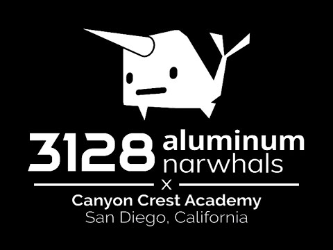

Robotics is a very prestigious program at the school I go to. My team’s name is the Aluminum Narwhals.
There is a very low acceptance rate and a very time-consuming schedule. Only the most passionate engineering
students make it in and manage well. I consider myself to be one of those students. In the summer of 9th grade,
I decided to prepare myself for robotics by buying a coding book and teaching myself Python, so I could apply to Controls.
I would practice 3 hours a day, followed by a test each week (my mom would choose questions from the book). On top of this,
I took the week-long summer program hosted by the Narwhals themselves. Throughout this week, we learned how to design a mini robot
and have a competition. We would use a combination of Scratch and legos to build our robot. I ended up winning 1st place in the competition.
Throughout this time, I made sure to introduce myself to the existing members of the team so they would remember me
when I applied in 9th grade. This put me in a safe position for applications. After I was accepted to the team sometime in October,
I was surprised to see that my preparation had come to waste. We never used Python at all in Robotics. We only ever used Java,
with the occasional HTML and CSS. Although this was different than my expectations, the upperclassmen would spend months familiarizing
us with these languages. However, this was not the only thing that surprised me. After a few months, I found myself enjoying the wiring
aspect of Controls more than the coding. This, however, was a good thing because I was being engaged and passionate about Robotics.
See the Running Page to learn about my running passion.
